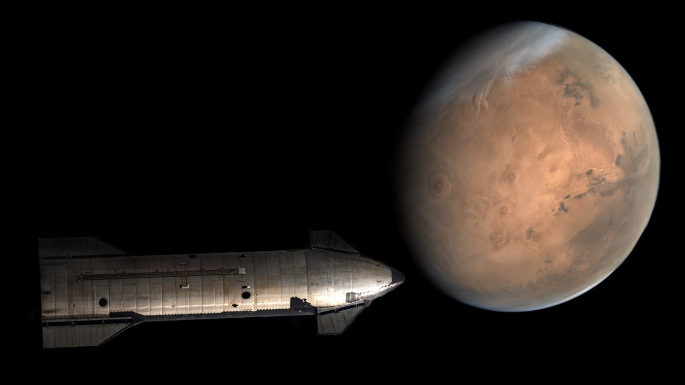
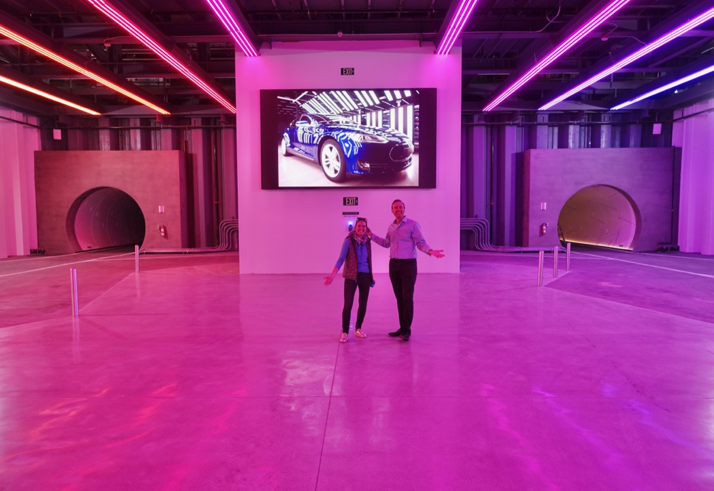
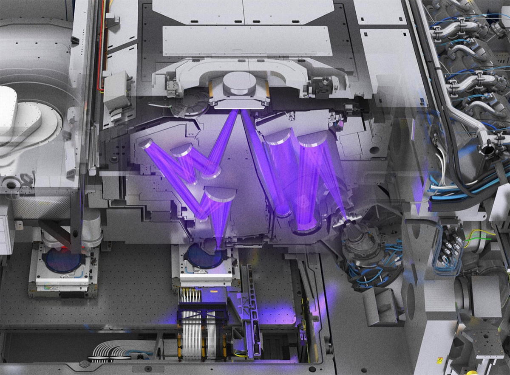
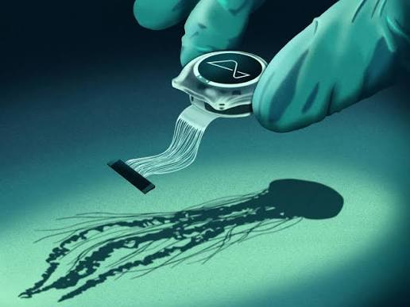
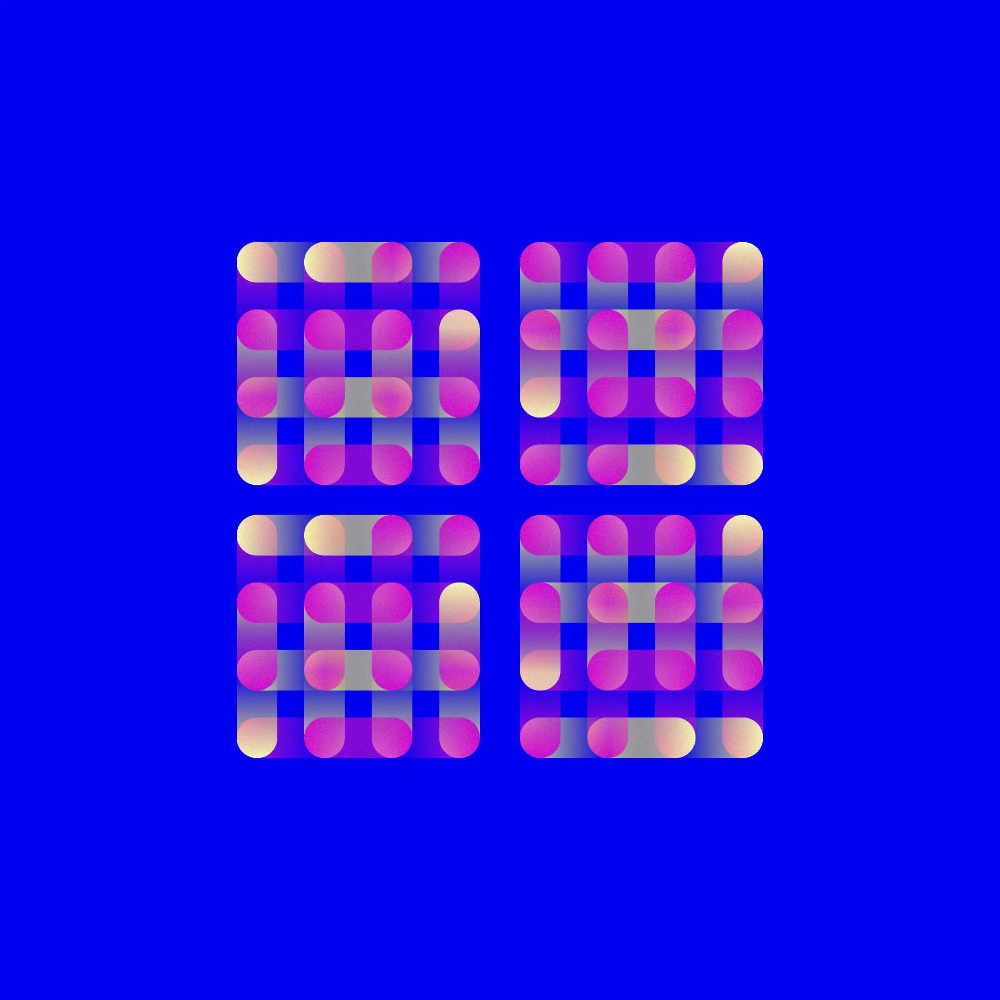
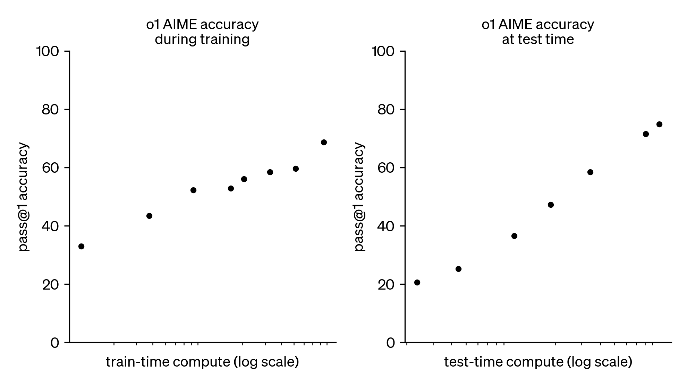
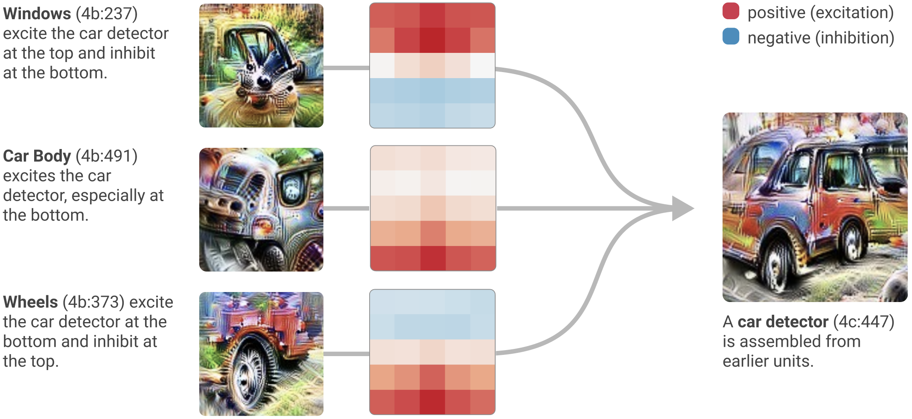
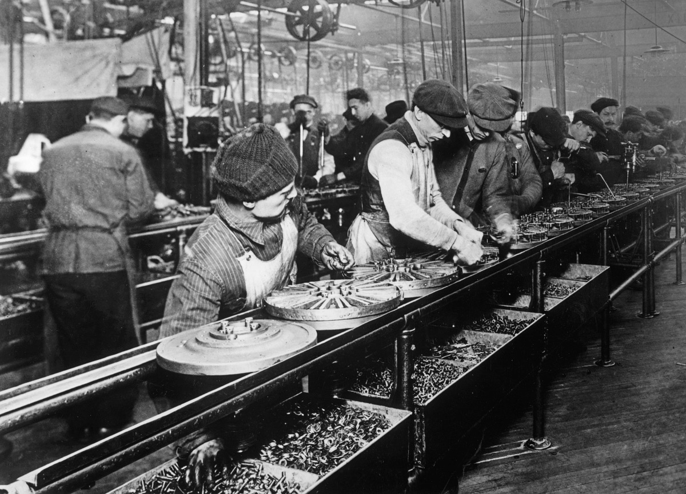

Favorite Projects
Space & Infrastructure

Falcon 9 - SpaceX
Reliable and reusable rocket that delivered ~81% of total global launch mass to orbit in 2025.
Starship - SpaceX
The most powerful rocket ever built, fully reusable, designed to carry humans and cargo to the Moon, Mars, and beyond.

Interplanetary Transport System - SpaceX
Economically affordable and scalable transportation between planets.

Earth to Earth Transportation - SpaceX
Travel between any two points on Earth in less than 30 minutes.

Mars Colonization - SpaceX
Make humanity a multi-planetary species by establishing a self-sustaining city of a million people on Mars.

Tunnels - The Boring Company
A dense multi-level network of underground tunnels for autonomous electric vehicles, to eliminate surface traffic congestion in cities.

EUV Lithography Machines - ASML
Places atoms with a few nanometers of accuracy to etch transistors just tens of atoms wide, at ~200 wafers per hour.
Brain-Computer Interface

Biohybrid - Science Corporation
Use living neurons instead of wires to connect brain-computer interfaces.

The Link - Neuralink
Implantable brain-computer interface to restore autonomy for people with paralysis, and eventually enable human-AI symbiosis.
Artificial Intelligence

GPT-3 - OpenAI
Language model performance increases predictably with the scale of data, compute, and parameters.

o1 - OpenAI
An LLM that reasons via chain-of-thought before answering — performance scales with both train-time and test-time compute.

Transformer Circuits - Anthropic
Reverse-engineer neural networks into human-interpretable circuits.

Terafab - Tesla & SpaceX
The largest chip production factory on Earth, targeting 1 terawatt of annual compute — roughly 50× the combined output of all existing global fabs.

Project Suncatcher - Google Research
Put AI-accelerated hardware in space.

Lunar Mass Drivers - SpaceX
Electromagnetic catapults on the Moon to launch payloads into space without propellant.
Education
Anki - Damien Elmes
Remember anything by exploiting the forgetting curve — cards resurface right before you'd forget them.
Civilization
Democracy - Cleisthenes, Athens (~508 BCE)
Ordinary citizens vote on laws and elect leaders instead of being ruled by one — first practiced in ancient Athens.
Capitalism - Adam Smith (1776)
Individuals own capital and trade freely; competition and self-interest coordinate the production of goods at scale.

Mass Production - Henry Ford (1913)
A moving assembly line where each worker repeats one task — dropping car assembly from 12 hours to 90 minutes and turning luxury into an everyday product.
Psychology
Milgram experiment - 1963
Ordinary people obey authority, even against their conscience.
Stanford Prison Experiment - 1971
Ordinary people turn cruel when assigned a role of power.
Asch Conformity Experiments - 1950s
People conform to the group's opinion, even when it is clearly wrong.